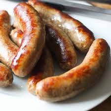

Bratwurst

Description
Bratwurst is a type of German sausage typically made from pork.
Historically, Bratwurst can be documented in Germany as far back as
the year 1313 in the city of Nuremberg.
Ingredients
- 2 pounds fresh bratwurst sausages
- 2 onions, thinly sliced
- 1 cup butter
- 6 (12 fluid oz) cans or bottles of beer
- 1 1/2 teaspoons ground black pepper
- 10 hoagie rolls
Steps
- Prick bratwurst with fork to prevent them from exploding as they cook.
Place in a large stock pot with the onions, butter, and beer. Place pot
over medium heat, and simmer for 15 to 20 minutes.
- Preheat grill for medium-high heat.
- Lightly oil grate. Cook bratwurst on preheated grill for 10 to 14 minutes,
turning occasionally to brown evenly. Serve hot off the grill with onions
on hoagie rolls.